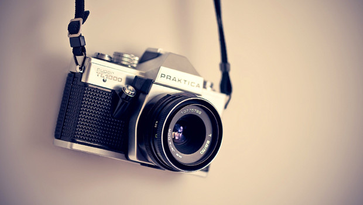
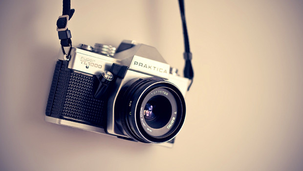

This is my first picture
This is my first picture
 I love black and white photos
I love black and white photos
 I also really like creative photos
 This is my favorite camera
I also really like creative photos
 This is my favorite camera


My website is about the things that i like. I decided to put some of my interest to give my audience a chance to get to know me before going further into my website.
Im gonna start off with music. My love for music runs deep. Ive always loved music no matter kind it is. My music taste varies from Hip-Hop to R&B to even K-pop i love everything honestly. Music also helps me alot it will soothe me through my dark times and there will always be a song to fit your mood. Music is truely amazing.
Food...well thats just self explanitory. Food is my happy place. haha...well thats it
water is my favorite beverage thats why i added it to the list.
Another thing i like is flowers. I love how colorful they are it really can just brighten my mood. I dont know if this would connect with this but since i like diversity i feel as if thats another reason i like flowers. They all come in different shapes, sizes, and colors and i love it.
I really love this picture. The colors are so bright and they are just so pretty.